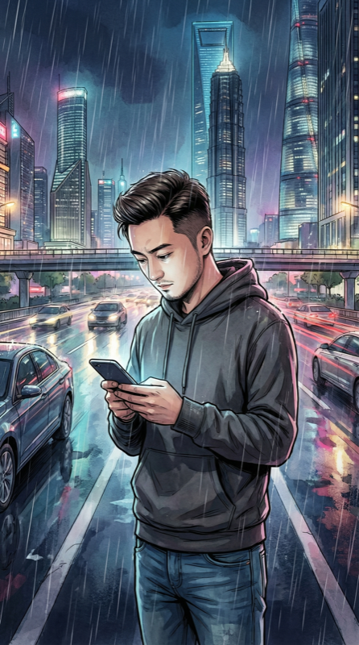
雨夜。上海高架天桥上，城市的霓虹灯在雨幕中模糊成一团。
余额：¥3,247.18。
我盯着手机屏幕上的数字，雨水顺着额头淌下来，滴在屏幕上。
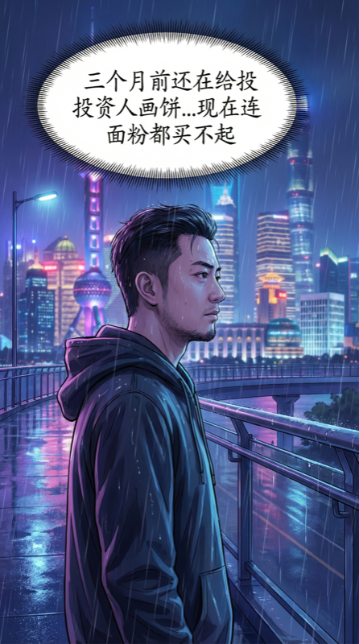
三个月前我还在给投资人画饼，现在连画饼的面粉都买不起。
第三次创业失败。投资人不接电话，合伙人散了，办公室的押金都退不回来。
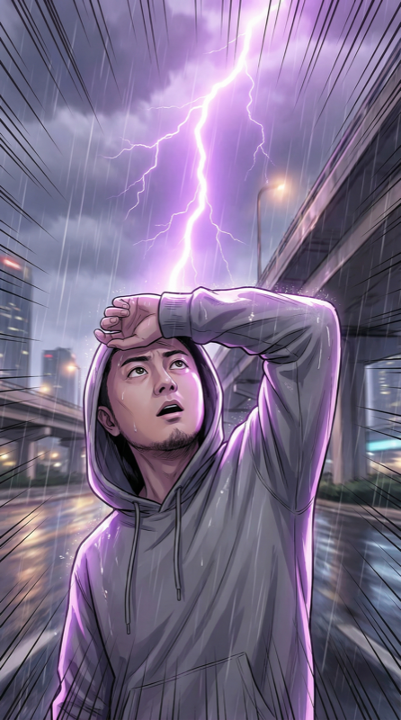
轰——！
一道紫色的光从天而降，不是闪电，比闪电更纯粹，像是天空裂开了一道缝。
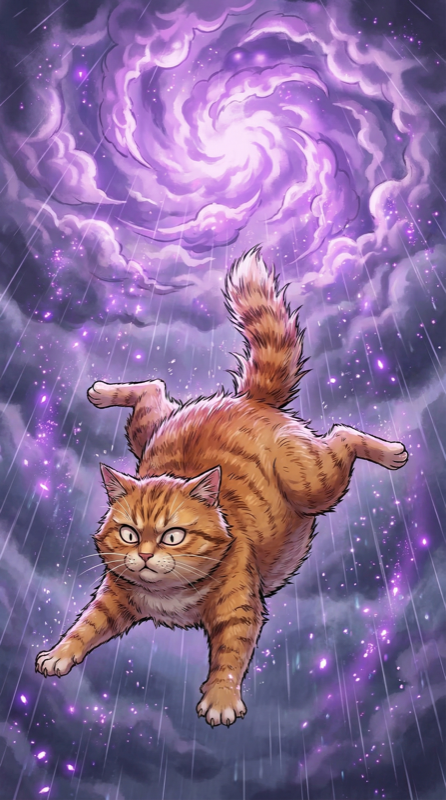
紫光中，一个毛茸茸的球体正在高速坠落——一只……肥橘猫？
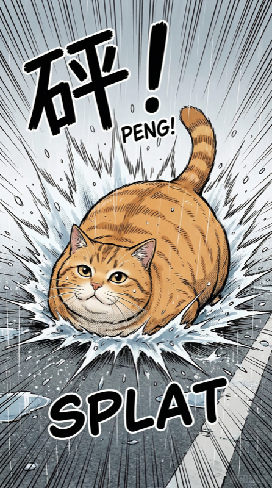
砰！
猫砸在我面前的地面上，溅起一圈水花。然后它抖了抖毛，若无其事地坐好了。
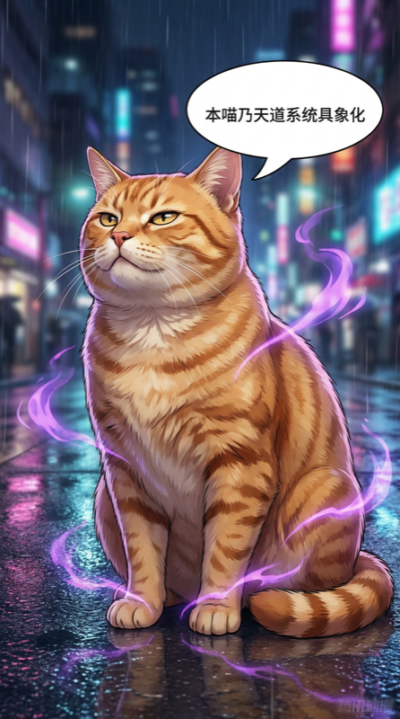
"本喵乃天道系统具象化，奉命指导你修炼商业大道。"
它开口了。用的是人话。还带着一股居高临下的语气。
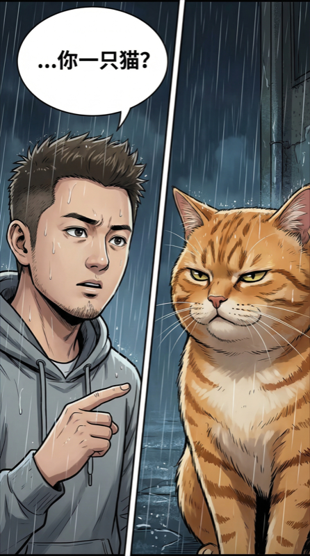
"……你一只猫？"
我确定我没有在做梦，因为梦里的猫一般不会这么胖。
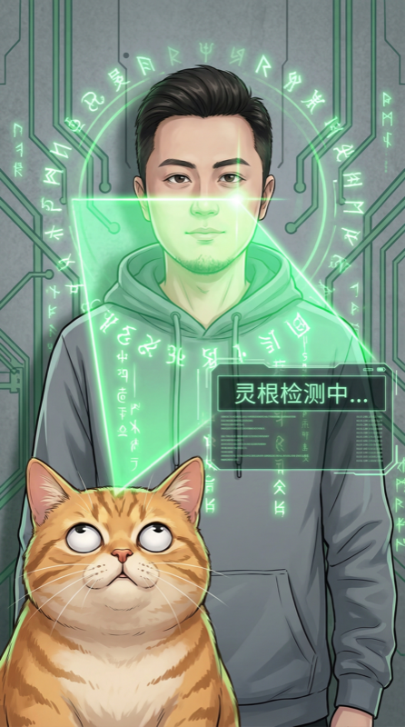
猫翻了个白眼，一道绿色的扫描光从它爪子里射出，从我头顶扫到脚底。
"灵根检测中……"
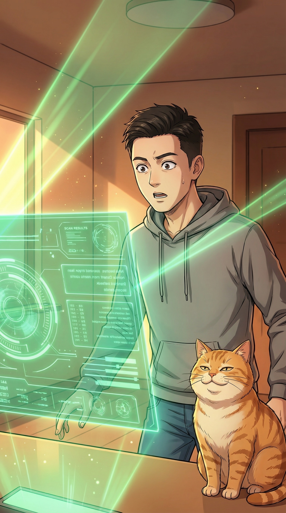
扫描结果以全息投影的方式弹出来：
灵根资质：废柴。炼气：零层。一个大红叉。
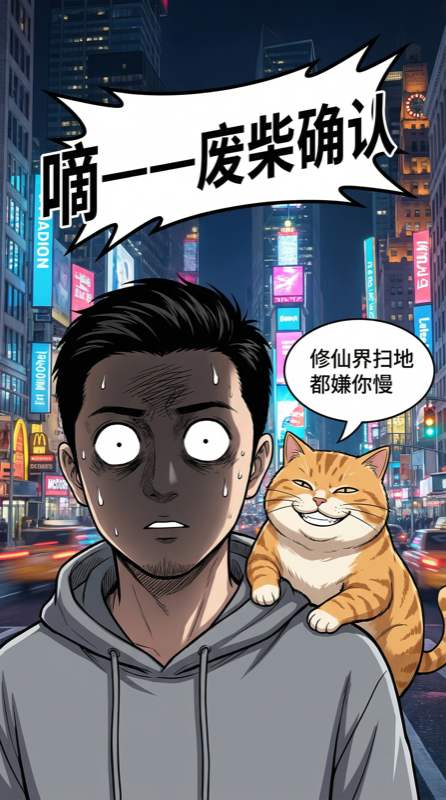
"你这灵根，修仙界扫地都嫌你慢。"
嘀——废柴确认
我的脸黑了。被一只从天上掉下来的肥猫侮辱灵根资质，这大概是创业失败之后最离谱的事。
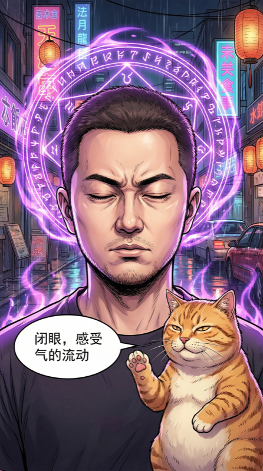
"闭眼。感受气的流动。"
肥猫突然正经起来，爪子在空中比划，一圈紫色的能量涟漪从它身上扩散开来。
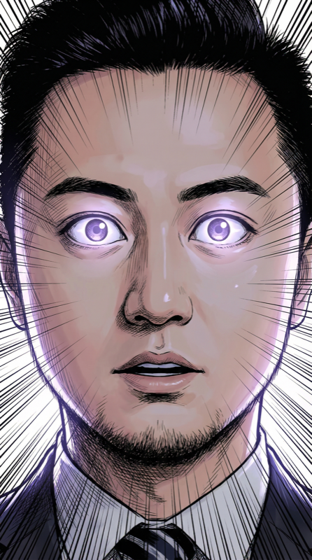
我睁开眼的那一刻，世界变了。
像是有人给现实加了一层滤镜——不，是揭开了一层遮罩。
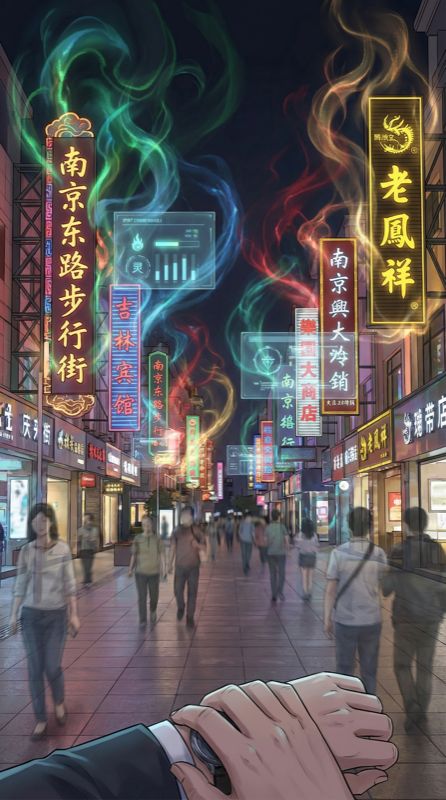
每家店铺的头顶，都漂浮着不同颜色的光晕。有的翠绿盎然，有的暗淡发灰，有的金光闪闪。
商业灵气……我竟然能看到每家生意的"气运"。
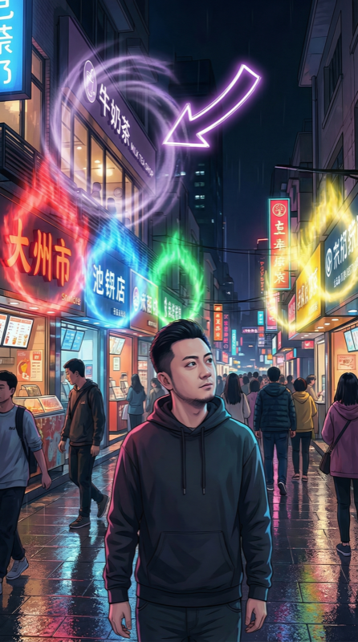
走了半条街，一家二楼的奶茶店吸引了我的注意。
别的店要么绿要么灰，唯独这家——微弱的紫气。紫气意味着被严重低估。
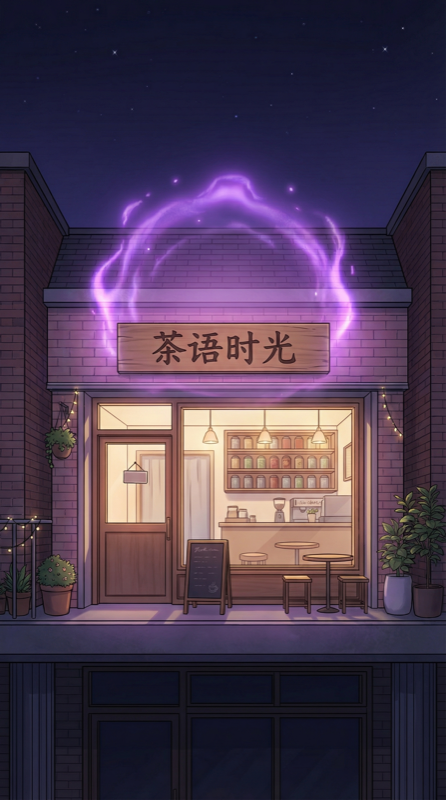
"茶语时光"——一家藏在写字楼二楼的小奶茶店，紫色的光晕微弱但顽强地跳动着。
它不该倒闭。有什么东西被所有人忽略了。
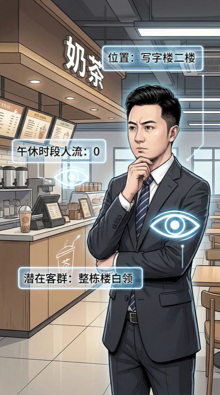
灵眼的分析数据浮现在眼前：位置在写字楼二楼，午休时段人流为零，但整栋楼全是白领。
问题不是店不好，是没人知道它在二楼！
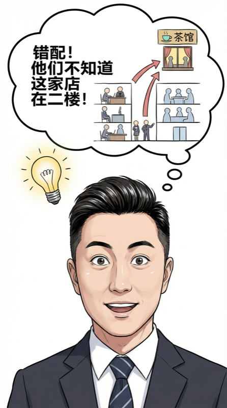
错配！信息差！楼里几百号白领中午想喝奶茶，但他们根本不知道二楼有家店。
我的第一个商业灵感，来得如此清晰。
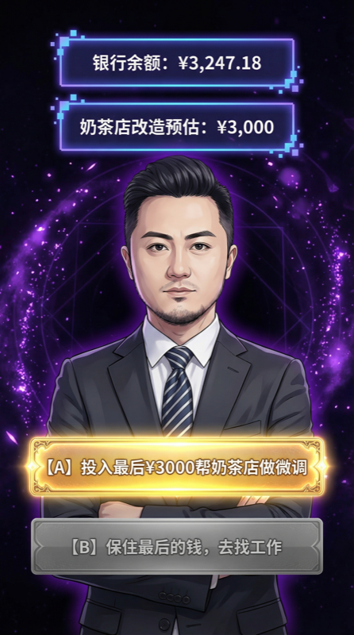
银行余额：¥3,247.18 | 改造预估：¥3,000
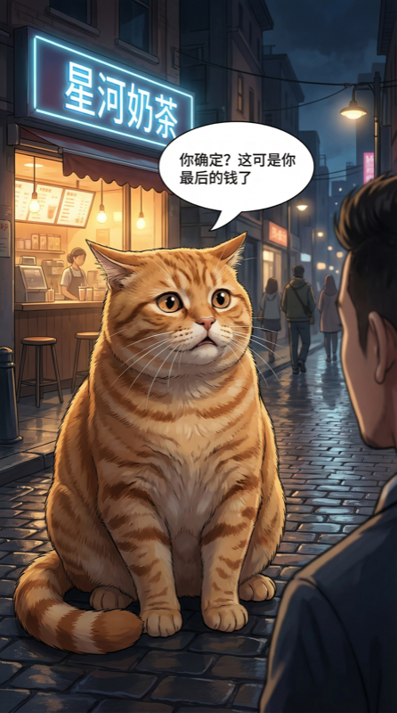
"你确定？这可是你最后的钱了。"
大橘难得没有吐槽，而是认真地看着我。
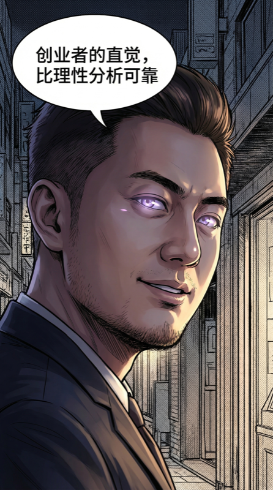
"创业者的直觉，比理性分析可靠。"
这话我自己都不信。但我选了A。因为不选A的话，我和那些放弃梦想去找工作的人有什么区别？
手指按下"A"的那一刻，一道金光从选择面板中涌出，涌入我的身体。
选择本身，就是修炼。
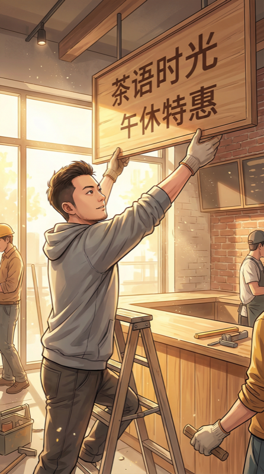
接下来的三天，我把所有精力砸在了这家奶茶店上。重新定位招牌，让一楼就能看到。
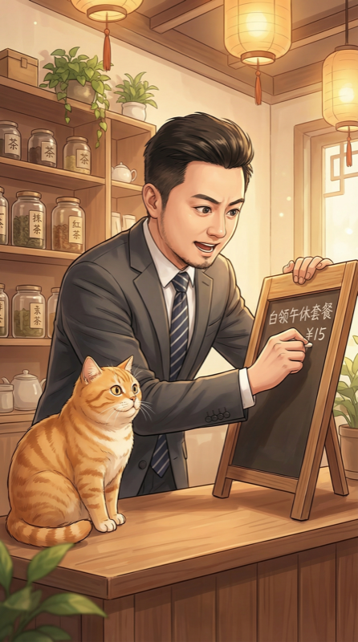
设计了"白领午休套餐"，15块钱一杯茶加一份小食，精准打中写字楼上班族的午休需求。
"你这算盘打得，修仙界商铺NPC都自愧不如。"
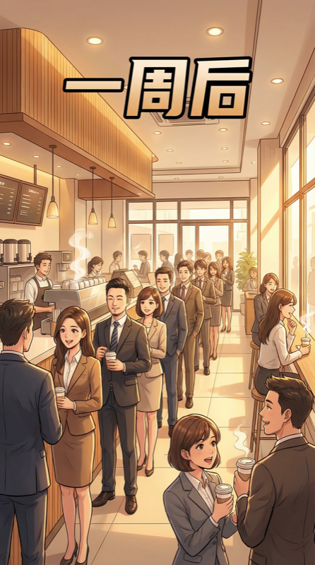
一周后。曾经冷清到能听见空调滴水的茶语时光，现在午休时间排队排到楼梯口。
营业额翻了三倍。
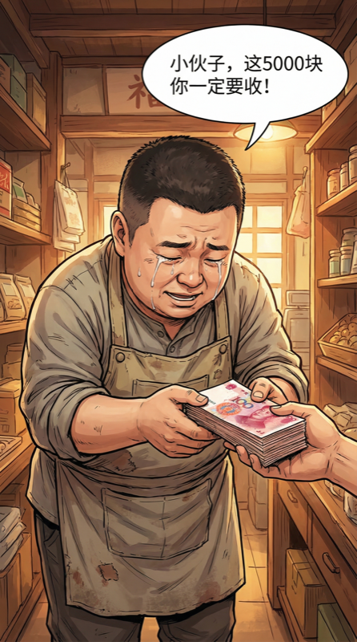
"小伙子，这5000块你一定要收！"
胖老板红着眼眶把钱塞进我手里。我挣扎了一下就收了——穷。
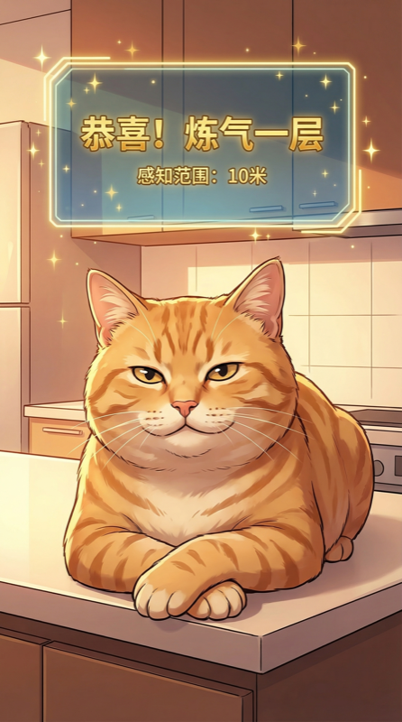
"恭喜，炼气一层。你现在能感知10米内的商业灵气了。"
大橘嘴角上扬，一个全息升级面板在它面前展开。
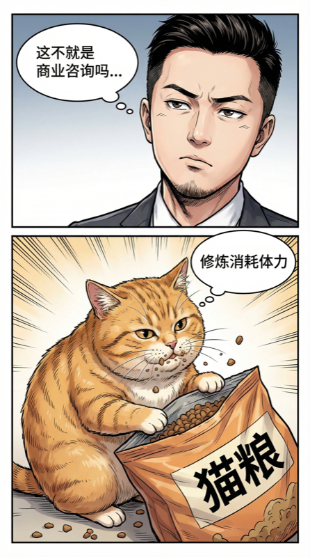
"这不就是商业咨询吗……"
"有区别吗？"
我没法反驳。转头发现大橘嘴角沾着猫粮碎屑。
"修炼消耗体力。合理膳食，懂？"
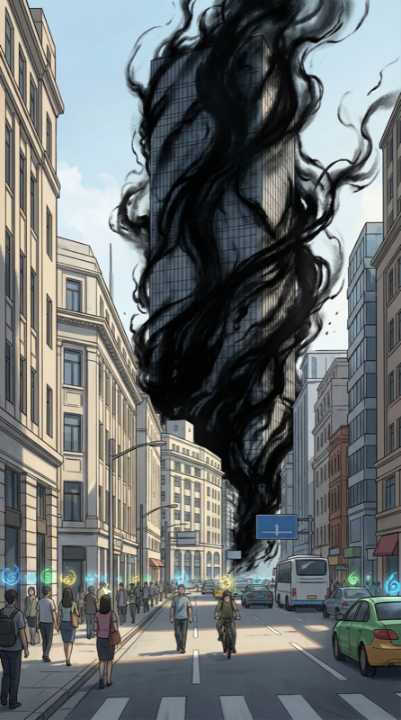
用新能力扫了一圈——大部分店铺的灵气正常，有强有弱，符合商业规律。
直到我看到对面那栋楼。
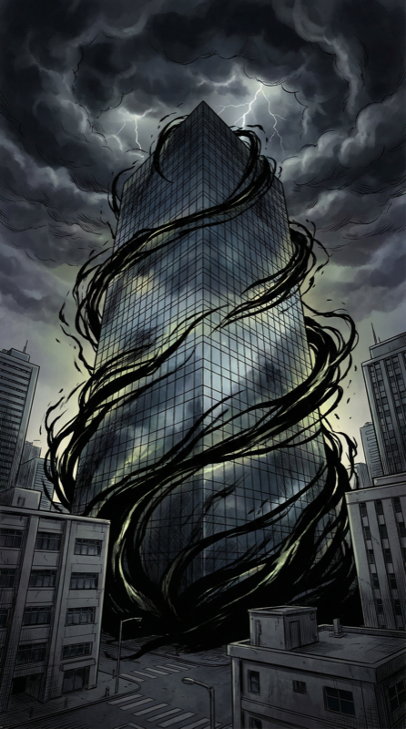
整栋写字楼被浓厚的黑气笼罩，像墨汁在水中扩散，不断蠕动翻滚。
那不是普通的"生意不好"。那是——
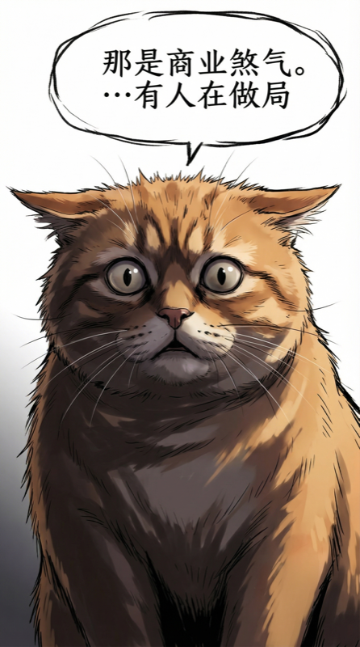
"那是商业煞气。有人在做局。"
大橘的表情变了。第一次，它脸上没有了嘲讽和懒散，取而代之的是纯粹的警惕。
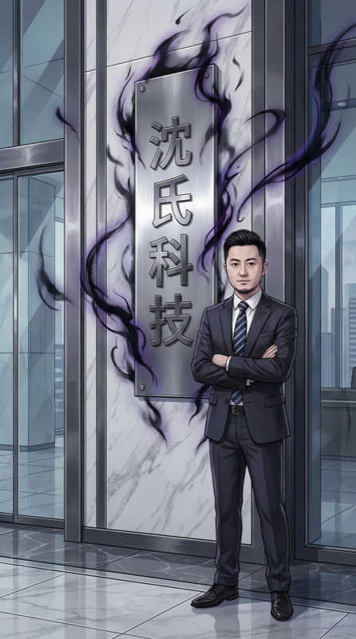
楼下的公司铭牌在阳光下反光：「沈氏科技」。黑气从铭牌后面渗出来。
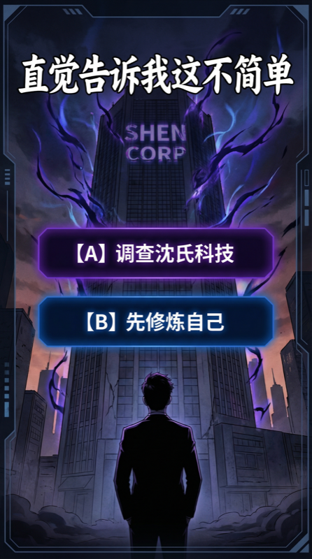
直觉告诉我这不简单。理性告诉我别管闲事。但创业者的本能让我选了前者——"拆开看看结构"。
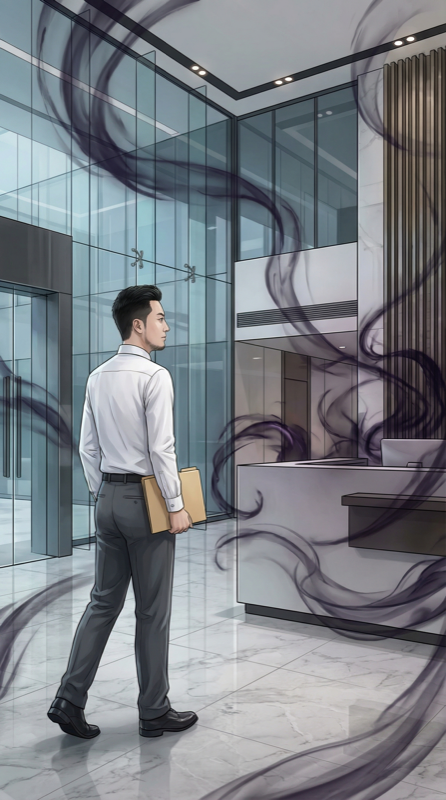
我换了衬衫和西裤，夹着简历走进沈氏科技大楼。假装来面试。
连帽衫创业者一秒变职场精英。感谢衣服的力量。
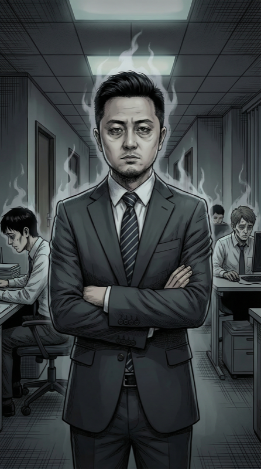
走进办公区的那一刻，灵眼所见让我的血液都凉了半截。
每个员工头顶的灵气……几乎枯竭。灰白色的，像快要熄灭的烛火。
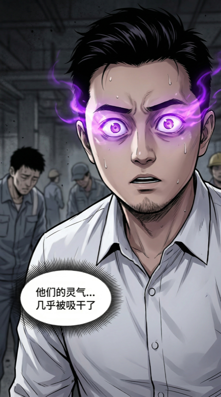
他们的灵气……几乎被吸干了。
这些人表面上正常地敲键盘、开会、喝咖啡，但在灵眼的视角下，他们像一群行走的空壳。
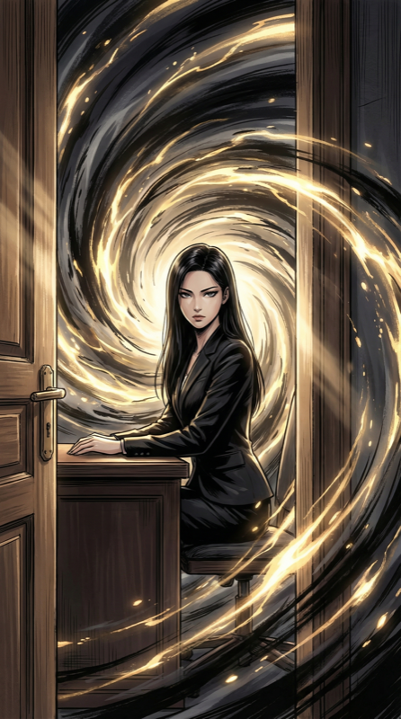
核心办公室的门半开着。我看到了她。
一个女人坐在那里。她周围，一个巨大的灵气旋涡在缓缓旋转——暗金交错，像一个微型黑洞。
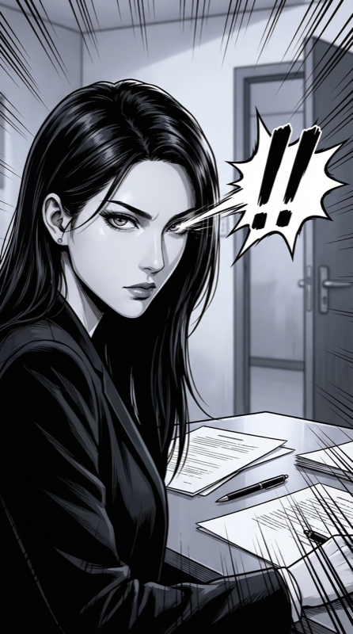
！！
她抬头了。直直地看向我藏身的方向。
不可能。我在走廊，她在办公室，中间隔着一面墙。她怎么——
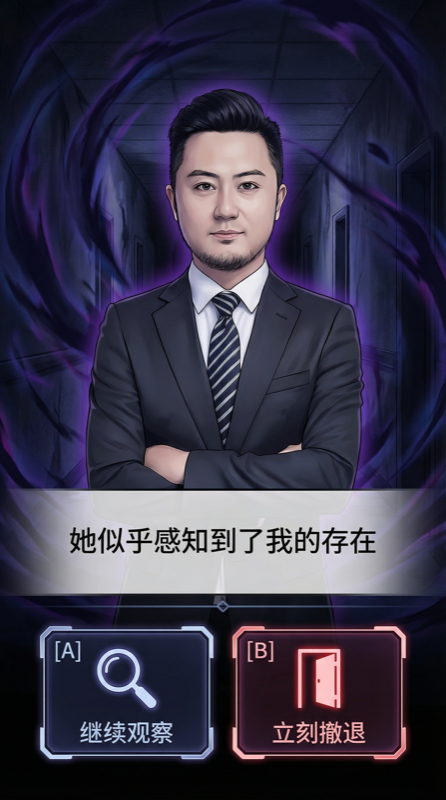
她似乎感知到了我的存在。每一个理性的声音都在喊"跑"。但我没动。
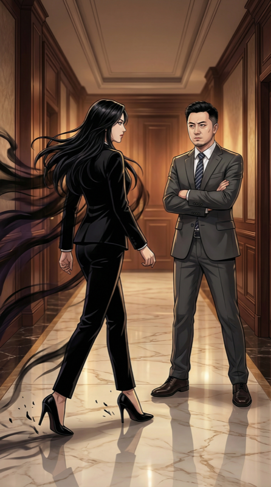
高跟鞋敲击大理石地面的声音，从办公室里传出来。越来越近。
她朝我走过来了。暗色的能量在她身后拖曳，像一条看不见的斗篷。
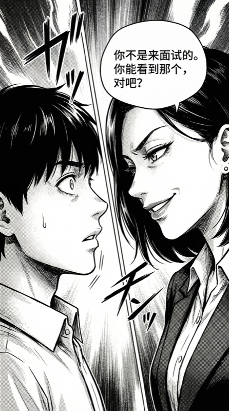
"你不是来面试的。"
她的声音很平静，像冬天的湖面。然后她微微一笑：
"你能看到'那个'，对吧？"
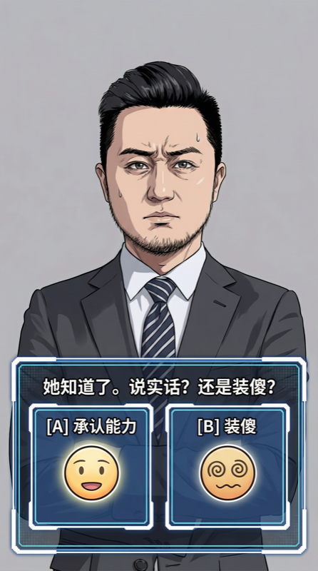
她知道了。装傻没用——她这种级别的人，装傻只会显得更可疑。
我感觉背包在动。低头一看——大橘从拉链缝里伸出半个脑袋和一只爪子，疯狂比划。
"快走快走快走！"
我选择了无视它。
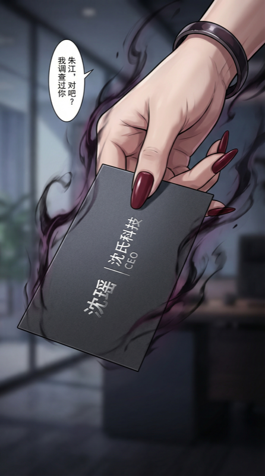
她递过来一张名片。纸质很好，极简设计。
"朱江，对吧？我调查过你。上一家公司……很可惜。"
沈瑶。沈氏科技CEO。她——调查过我？
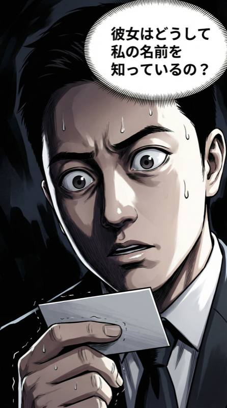
她怎么知道我的名字？我甚至还没递出那份假简历。
我的手微微发抖，不是因为害怕，是因为意识到自己可能从进门那一刻就被她盯上了。
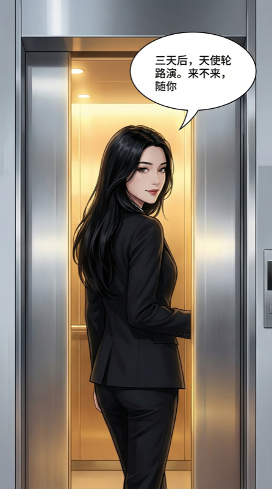
沈瑶走进电梯，转身。电梯门开始关闭的那一刻，她说：
"三天后，天使轮路演。来不来，随你。"
电梯门合上。她的微笑消失在金属门缝之间。
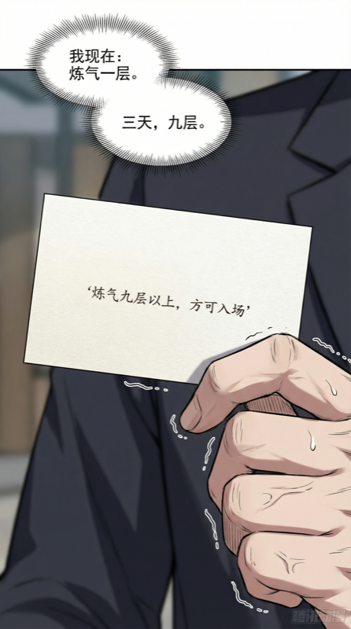
我翻过名片。背面有一行小字：
「炼气九层以上，方可入场」
我现在：炼气一层。三天。九层。
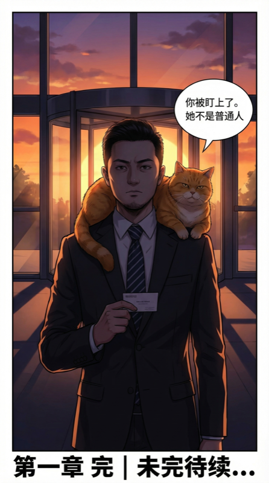
大橘跳上我的肩膀。它的表情前所未有地严肃。
"你被盯上了。她不是普通人。"
我捏着名片，看向那栋被黑气笼罩的大楼。三天。九个级别。一个谜一样的女人。
这一次，我不能输。
未完待续……